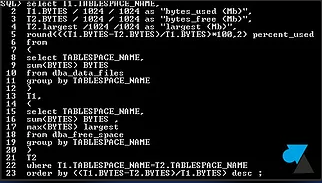
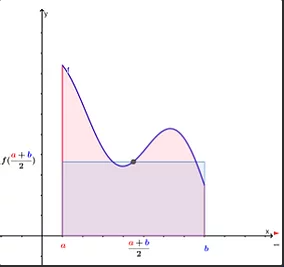
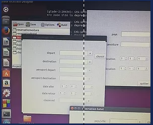

Mes competencesManipuler les Bases de Données:-Outils utilisés :ORACLE-Contexte: Ajouter/supprimer/lire/modifier le contenue d'une base de données a laide du SQL /PLSQL  |
Gérer les analyse numérique:-Outils utilisés :PYTHON-Contexte: Resolution des equations non lineaire/Integration/Interpolation  |
Mon ProjetLe projet est une application dédiée aux agences de voyage pour faciliter aux clients la réservation des billets de vol, réservation hôtel ou location de voiture. cette application est développée avec le langage C pour les traitements , on a utilisé aussi GLADE pour les interfaces graphiques (qu' on les a modélisé avec l'outil BALSAMIQ en premier lieu) coté client: le client peut réserver un vol , un hôtel ou une voiture ,faire des réclamations, voir l'historique de ses factures coté agents: gérer (modifier/supprimer/ajouter) des clients ou des vols/hôtels/voitures selon disponibilité ,gérer les réclamations et les factures coté administrateur: administrateur peut ajouter/supprimer/modifier des agents et finalement pour la partie conception on a utilisé l'outil Rational Rose. |
 |